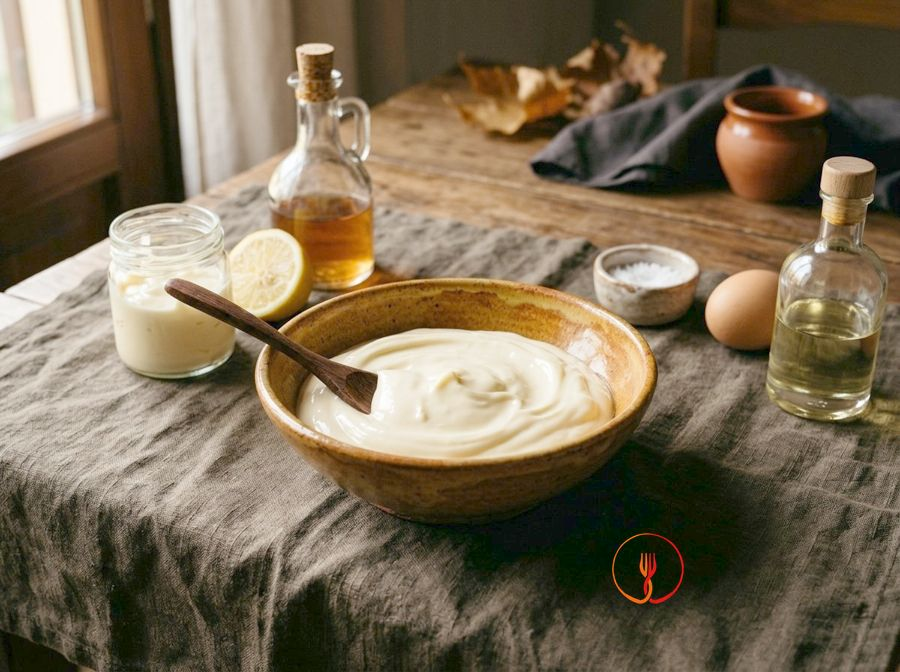

Maionese
Ingredienti
- uovo intero pastorizzato1 numero
- olio di semi200 ml
- succo di limone15 ml
- aceto5 ml
- sale3 gr
Allergeni
Uova
Può contenere tracce di: Solfiti.
Procedimento
- Versa l'uovo pastorizzato in un contenitore alto e stretto, adatto al mixer a immersione.
- Aggiungi il sale, il succo di limone e l'aceto.
- Versa l'olio lentamente sopra gli ingredienti, senza mescolare.
- Inserisci il mixer fino al fondo del contenitore e azionalo senza muoverlo per alcuni secondi.
- Quando la parte inferiore inizia ad addensarsi, solleva lentamente il mixer per incorporare tutto l'olio.
- Continua fino a ottenere una salsa compatta e omogenea.
- Assaggia e regola l'acidità con qualche goccia di limone.
- Trasferisci in un contenitore pulito e conserva immediatamente in frigorifero.
Consigli dello chef
Consigli, errori e alternative:
- Utilizza uova pastorizzate per ridurre il rischio microbiologico.
- Se la maionese impazzisce, prova a emulsionarla nuovamente aggiungendo poco alla volta un tuorlo pastorizzato in un recipiente pulito.
- Puoi sostituire parte dell'olio di semi con olio extravergine delicato.
- Aggiungi senape per una variante più aromatica.
Valori nutrizionali (stima)
| Per porzione (64 g) | Per 100 g | |
|---|---|---|
| Energia | 1782 kJ / 426 kcal | 2770 kJ / 662 kcal |
| Proteine | 1.6 g | 2.5 g |
| Carboidrati | 0.4 g | 0.5 g |
| di cui zuccheri | 0.3 g | 0.4 g |
| Grassi | 47 g | 74 g |
| di cui saturi | 5.5 g | 8.5 g |
| Fibre | 0.0 g | 0.0 g |
| Sale | 0.8 g | 1.2 g |
Valori stimati con l'AI su dati medi CREA / USDA: sono indicativi e non sostituiscono il parere di un medico o di un nutrizionista.
Apri la ricetta nell'app per la lista della spesa, le schede ingredienti e i negozi vicini.